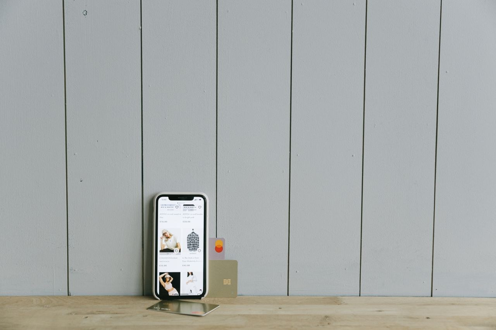

Hasta ahora, ChatGPT te ayudaba a elegir qué comprar: comparaba precios, leía reseñas y te armaba una lista. El viernes 13 de noviembre, OpenAI dio el paso que faltaba: su agente de inteligencia artificial ya puede completar la compra por ti. La herramienta se llama ChatGPT Wallet y es, en la práctica, una cartera dentro de ChatGPT. Eso sí, hay un detalle tranquilizador: la tarjeta no se mueve sin que tú digas que sí.
¿Qué es ChatGPT Wallet?
Wallet es una función de pago que vive dentro de dots, los agentes personales de OpenAI presentados en su conferencia de desarrolladores del 29 de septiembre. Los dots son asistentes que trabajan por su cuenta en la nube: buscan, comparan y gestionan tareas mientras tú haces otra cosa. Con Wallet, ese trabajo llega hasta la caja: el agente encuentra el producto, arma el pedido y lo paga, siempre con tu aprobación en cada compra.
Es el segundo intento de OpenAI en poco más de un año: en el otoño de 2025 lanzó Instant Checkout y en marzo de 2026 lo retiró. Wallet es la vuelta con otra idea: que el agente haga el trabajo pesado y el humano conserve la última palabra.
Así funciona una compra
El flujo tiene tres pasos y ninguno ocurre a escondidas. Primero, agregas tu tarjeta una sola vez a Wallet. Después le pides a tu dot que te ayude con una compra: busca el producto, compara opciones y te presenta lo que encontró. Y por último, antes de que se cobre nada, revisas los artículos, el total y la tarjeta, y apruebas con Face ID o tu huella digital.
Sin esa aprobación, la compra no se ejecuta. No es una autorización abierta para que el agente gaste por su cuenta: cada pago exige tu visto bueno, uno por uno.
¿Y mi tarjeta está segura?
Es la pregunta clave, y OpenAI construyó todo el sistema alrededor de ella. El agente nunca ve los datos reales de tu tarjeta. Cuando apruebas una compra, la red de pagos emite un token: un número sustituto, con su propio código de seguridad y fecha de vencimiento, válido solo para esa transacción. Ni el comercio ni el agente llegan a conocer tu número real.
La herramienta se desarrolló junto con American Express, Mastercard y Visa, y también acepta tarjetas elegibles emitidas por Chase. Además, según OpenAI, conservas las recompensas de tu tarjeta y el derecho a disputar un cargo, por ejemplo si el producto llega defectuoso. La transacción es directa entre tú y el comercio: el vendedor sigue siendo responsable del precio, el envío, las devoluciones y la atención al cliente.
OpenAI también publicó una guía para comercios, el Commerce Partner Playbook, para que verifiquen su negocio y compartan su catálogo actualizado. Y un dato que dice mucho de la estrategia: según CNBC, OpenAI no cobrará comisión por las transacciones al inicio. Su prioridad, por ahora, es que el sistema funcione y que los comercios confíen en él.
¿Quién puede usarlo?
Por ahora, casi nadie: el despliegue es deliberadamente pequeño. Wallet arranca solo para suscriptores del plan ChatGPT Pro en Estados Unidos, mayores de 18 años, con una dirección de facturación estadounidense y una tarjeta elegible emitida en ese país. Además, solo funciona dentro de las conversaciones con un dot: no en el chat normal, en el modo de trabajo ni en los hilos de Codex.
OpenAI no dio fecha para ampliarlo a otros países ni a otros planes, y solo dijo que irá habilitando más usuarios y comercios a medida que avance la prueba. Para quienes estamos fuera de Estados Unidos, la noticia es una señal de hacia dónde va la IA, no una función que podamos usar hoy.
Lo que viene: ¿comprar sin aprobar cada vez?
La propia OpenAI reconoce que este es solo el primer paso. Su plan, según Reuters, es que con el tiempo el usuario pueda delegar las compras por completo dentro de parámetros que él mismo defina: límites de gasto, categorías permitidas o periodos de tiempo. Imagina decirle «reponme el café cuando se acabe, sin pasar de 20 dólares» y que lo haga solo. Ese futuro aún no tiene fecha.
Hay un obstáculo real en el camino: algunos sitios web bloquean a los agentes o marcan sus compras como fraude. OpenAI admite que tendrá que aprender del uso real y trabajar con las tiendas para mejorar la compatibilidad.
Lo esencial
- OpenAI lanzó el 13 de noviembre ChatGPT Wallet: sus agentes «dots» ya pueden completar compras por el usuario.
- Cada compra requiere tu aprobación con Face ID o huella: el agente nunca paga por su cuenta.
- Ni el agente ni el comercio ven tu tarjeta real: la red de pagos emite un token sustituto para cada transacción.
- Se desarrolló con American Express, Mastercard y Visa; conservas tus recompensas y el derecho a disputar cargos.
- Por ahora solo para suscriptores Pro en Estados Unidos, mayores de 18 años; no hay fecha para otros países ni planes.
En Pulso Tech seguiremos el pulso de esta historia: la IA que ya no solo recomienda, también compra.
✓ Artículo verificado con al menos 2 fuentes independientes. Así verificamos en Pulso Tech.